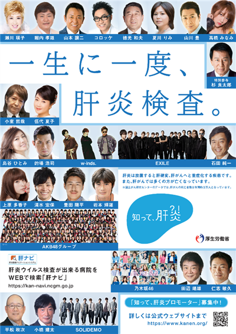

MISSION: 肝がん撲滅
YES WE 肝！
YES WE 肝！
ひとりで、戦わないで。
肝炎ウイルス検査の陽性告知から専門医への接続まで。すべてのスタッフが「コーディネーター」として動けるための情報局です。
最新情報
Loading records...
00 当院の肝炎コーディネーターの取り組みについて
01 肝Co（肝炎医療コーディネーター）とは
連携のエコシステム
「予防・受検・受診・受療・フォローアップ」を支える橋渡し役。院内の多職種チームがあなたの活動をサポートします。
予防 → 陽性発見 → 専門医 → 治療
患者さんのリアルな悩み
- 「感染への偏見が怖くて相談できない…」
- 「治療費が高額になりそうで不安…」
- 「仕事とどう両立すればいい？」
02 【医療スタッフ向け】 院内連携体制
「こんな時、肝Coにご相談ください！」
相談のタイミング
- 陽性だが未受診の患者さんを発見した
- 治療を中断している可能性がある
- 医療費に強い不安を感じている
- 副作用や仕事との両立を心配している
職種別の関わり
03 KNOWLEDGE: 支援に向けた専門知識
医療費助成・支援制度
助成金申請の運用知識と具体的な案内方法。治療と仕事の両立支援について。
詳細を確認患者心理への理解と配慮
診断時のショックへの寄り添い、偏見・差別防止のためのコミュニケーション技術。
詳細を確認04 NETWORK: 地域連携・相談窓口
地域連携・ネットワーク
拠点病院リストと当院の連携室。当院の有資格者：24名
詳細を確認連携拠点病院リスト
近隣の専門医・拠点病院の最新リストを確認できます。
詳細を確認05 【患者さん・ご家族向け】 当院のサポート
肝疾患相談窓口
不安や悩み、無料・匿名で相談可能です。
詳細を確認医療費助成制度
公的補助の申請方法をサポートします。
詳細を確認治療と仕事の両立
働きながら治療を続けるための就労相談。
詳細を確認06 DOWNLOADS: 資材ライブラリ

PDF肝炎陽性と言われたら
告知時に手渡すパンフレット。専門医受診の重要性を解説。
PNG
院内ポスター最新版
待合室用のポスター。大きな内線番号を記載済み。
07 CONTACT: お問い合わせ
支援チーム直通
平日 9:00 〜 17:00